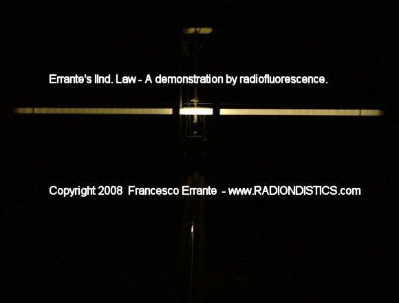
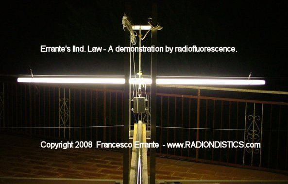
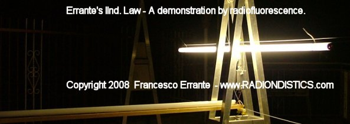

The reader who's not already familiar with the
virtual ground node mechanism is strongly adviced to read about the virtual ground monopole HF antenna and its
background, prior to proceeding with the reading
of this page.
The virtual ground node generator for balanced transmission lines and
balanced antenna systems (B.V.G.N.G. for short) is a radioelectric circuit
based on the same principals governing the virtual ground
node generator for unbalanced lines and it is built around a broadband
high power flux-coupled RF transformer having a 300 Ohm center-tapped
balanced primary winding and a 300 Ohm center-tapped balanced secondary
winding (Bal-Bal 1:1). The two central-tappings, each of them seat of a
virtual ground node, are bonded together and connected to the chassis,
ensuring a complete galvanic continuity amongst all the branches of this
device.
This device allows to de-coupling the half-a-wave folded dipole (300 Ohm impedance) from its balanced
transmission line (300 Ohm impedance) by imposing a clear-cut electric
boundary for the RF signals flowing between the transmission line and the
folded dipole antenna, in order for the dipole to exhibit its true bandwidth
and for the transmission line not to interfere with it.
In the absence of a clear-cut boundary between the transmission line and the
radiator, infact, the transmission line acts as part of the radiating
circuit, inevitably, modifying its electrical length and giving it-self
origin to hertzian radiation, with
unpleasant consequences such as: loss of signal, radio interferences
induction on the surrounding equipment and, above all, the illusion of a
phenomenon of resonance of the transmission line it-self. Balanced lines are, instead, aperiodic as
demonstrated here.

A folded dipole and its transmission line,
de-coupled through a BVGNG - Radioscopic detection of the RF electric field
generated by the radiator and absence of radiation by the balanced
transmission line.

A properly adapted 300 Ohm balanced
transmission line terminated on a 1/2 wavelenght folded dipole, through a
balanced virtual ground node generator, undergoing an high power (1 kW CW)
radioscopic detection. Experimental verification of the IInd Errante's law
applied to the transmission line

A properly adapted 300 Ohm balanced
transmission line terminated on a 1/2 wavelenght folded dipole, through a
balanced virtual ground node generator, undergoing an high power (1 kW CW)
radioscopic detection. Experimental verification of the IInd Errante's law
applied to the transmission line
This device can be built to suit any impedance
transformation ratio. For example: to properly feed an half a wavelength open
dipole with a 300 Ohm bifilar transmission line, it is necessary a Bal-Bal
having an imput impedance of 300 Ohm ed an output impedance of 70 Ohm.
Moreover, the B.V.G.N.G. can be employed to generate a virtual ground
node anywhere along a balanced transmission line.